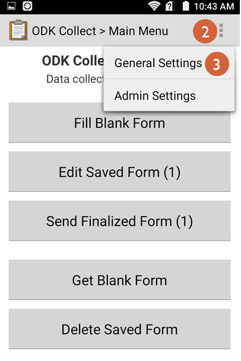

8. Submitting data: Tablet¶
Forms can be submitted via tablet. Any Android-based tablet with an Internet or mobile connection can be used to submit data to ELMO. While this section covers submission of forms via an app designed for form submissions, users may also use the browser app on the tablet to submit forms via ELMO Online. To submit forms via the tablet app, the following is necessary:
- Android-based tablet
- Internet or mobile connection
- ODK Collect app (via the Play store)
8.1. Setup of Android tablet/phone¶
Forms are downloaded, filled out, and submitted in a program called ODK Collect. This program comes pre-loaded on Carter Center tablets, but can also be downloaded from the Play Store on the tablet:
- Press Play Store
- Search for “ODK Collect”
- Press ODK Collect
- Press INSTALL
Using ELMO via ODK Collect requires an ELMO username and password. To acquire these, contact an ELMO administrator. To enter these in ODK Collect:
- On the tablet’s home screen, press ODK Collect
- On the ODK Collect home screen, press the Menu button. This is located in the top right corner of the screen and appears as three gray squares in a vertical line.
- Press General Settings
- 
- Press Configure platform settings
- Press URL
- Type the URL of the mission (ex.
https://example.getelmo.org/m/examplemission)
- To find the URL of the mission, log in to ELMO Online and go to the mission’s home page by clicking the Home icon
- Look in the address bar
- The URL in the address bar is the same as the URL of the mission, but with the language designation (ex. /en or /fr) removed
- Press OK
- Press Username
- Type the username
- Press OK
- Press Password
- Type the password
- Press OK
8.2. Downloading forms¶
A form must be downloaded to a tablet in ODK Collect before it can be submitted. To download a form:
On the ODK Collect home screen, press Get Blank Form
- A box may pop up asking for confirmation of username and password. If entered in General Settings, they should be correct. If not, type the correct username and password and continue.
- If a screen other than the home screen is shown, press the Back button on the tablet until the home screen reappears.
Mark the boxes next to the desired form(s)
Press Get Selected
Note: In general, any changes made to forms by mission coordinators during active missions usually need to be downloaded again to the tablets. Coordinators should also guide observers to delete previous versions to prevent confusion. Good team communication is critical!
8.3. Submitting forms¶
To fill out and submit a form:
- On the ODK Collect home screen, press Fill Blank Form
- Press the form to be filled out
- Fill out the form
- When obtaining GPS locations, stand outdoors. If indoors, stand by the nearest window.
- When the form is filled out, press Save Form and Exit on the last screen
- On the ODK Collect home screen, press Send Finalized Form
- Mark the box next to the form
- Press Send Selected
8.4. Editing forms before submission¶
To edit any answers to a form before submission, unmark the box on the last screen next to Mark form as finalized before pressing Save Form and Exit. Then:
- On the ODK Collect home screen, press Edit Saved Form
- Tap the form to be edited
- Tap a question to change its answer, or press Go To Start to review each question from the beginning.
- When finished with editing, mark the box next to Mark form as finalized before pressing Save Form and Exit
8.5. Override Code¶
ELMO does not typically allow the observer to finalize and send in forms if there are required questions that haven’t been answered. However, some situations may arise in which forms need to be submitted without required questions being answered. For example, an observation may be cancelled after observers have been deployed; the observers cannot collect any new data, but the data they have collected is still useful. These observers can bypass the required question and submit the form by entering an override code. The override code is found and regenerated as needed by mission coordinators on the settings page of each mission, and then provided to observers when overrides are desired.
To generate an Override code:

Click the Settings menu
In the General Settings area, locate the current Override Code and write it down; the code will no longer be available to view after being regenerated
Note: If code regeneration is deemed necessary, the best practice is to regenerate the code BEFORE forms are downloaded by observer teams. This avoids complications with communicating code updates and keeping track of different versions of forms. As a rule of thumb, frequent regeneration of codes should not be necessary.
Click Generate to obtain a new code
In order to use the override code, forms must be set to allow for incomplete responses. When creating or editing the relevant form, check the box that says Allow Incomplete?. Once this is done, the form’s Allow Incomplete? setting should reflect Yes in the overall list of forms. If not initially set, forms have to be downloaded again by observers in order to take effect.
To submit an incomplete form with an override code, fill out the form as usual, other than the unanswered questions. At the end of the form, a question will appear: Are there missing required answers? The options will be I don’t think so and Yes.
- Select Yes
- Alternatively, select I don’t think so to go back and answer the required questions
- Enter the override code
Once the override code has been obtained and successfully entered, the observer can mark the form as finalized and submit.